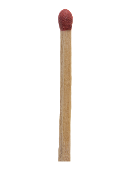

Reliance Pure Foods
A natural focused independent grocery store based in Seattle, Washington.
They stayed open from the 1930s to the 1950s. Their art deco designs and coffee focused memorbeila keeps collectors intrigued. This matchbox is missing all the matches and has been laid out flat but the colors and cardboard have stayed in tact.
MATCHBOOK
Updated April 1, 2020 I Samantha Pickett